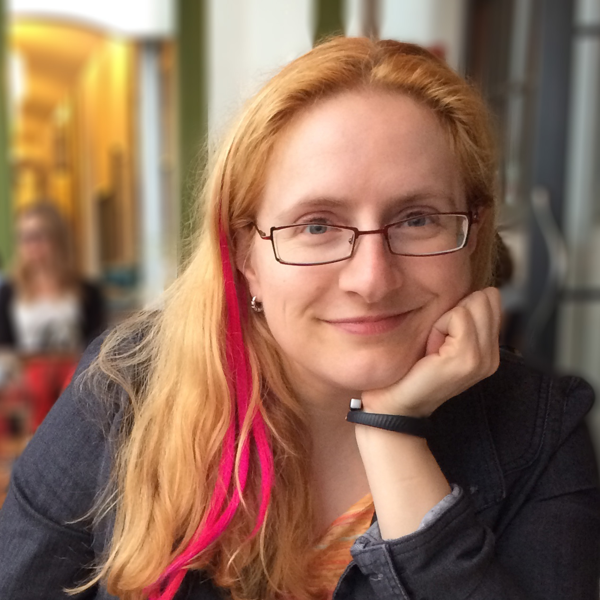

 <div class="content">
    <div class="field field-name-body field-type-text-with-summary field-label-hidden"><div class="field-items"><div class="field-item even"><h3><strong>Current Headshot; click for full size:</strong></h3>
<p><a href="bridgetkromhout.jpg"><strong></strong></a></p>
<h3><strong>Speaker Bio:</strong></h3>

<p>Bridget Kromhout is an operations engineer at <a href="http://dramafever.com">DramaFever</a>, the largest streaming video site for international content. Her CS degree emphasis was in theory, but she now deals with the concrete (if ‘cloud’ can be considered tangible). She co-hosts the <a href="http://arresteddevops.com">Arrested DevOps</a> podcast, helps wrangle speakers for the Twin Cities <a href="http://www.meetup.com/DevOps-Minneapolis/">DevOps</a> and <a href="http://aws.mn">AWS</a> meetups, and co-organizes <a href="http://devopsdaysmsp.org/">devopsdays Minneapolis</a>.</p>
</div>
</div>
</div>
